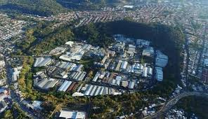

El Plan de La Laguna en Antiguo Cuscatlán,
hoy zona industrial y sitio del Jardín
Botánico, se asienta sobre un antiguo
cráter volcánico que sucumbió hace 2200 años.

El Plan de La Laguna es considerado como un cráter explosivo
formado por una violenta erupción hidromagmática.
Se ha afirmado que el terremoto de 1873 secó los manantiales
que alimentaban la laguna, la cual, por consecuente, desapareció
(Lardé y Larín 1977). Sin descartar que el terremoto haya
tenido algún efecto en el nivel de la laguna, ésta fue
secada artificialmente poco antes de 1912, cuando se
escribió que, junto a Antiguo Cuscatlán, "hasta muy poco
tiempo existió un pequeño lago que la actividad é
inteligencia de [Fedor] Deiningher, supo desecar"
(Peccorini 1951:69). El fondo del cráter actualmente posee
varias fábricas y se mantiene seco gracias a un sistema de
drenaje y bombeo.
-(Williams y Meyer-Abich 1955;Sofield 1998)